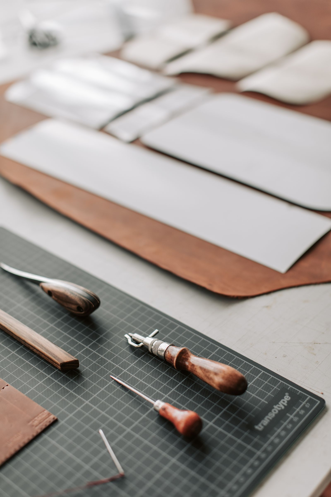

Material
Leather
The confirmed foundation of Flakem’s manufacturing activity.
About Flakem
01 / The business
Flakem Designs manufactures leather products in Wakiso, Uganda.
The business is represented by Tugumisirize Flavia and communicates directly with customers about what is currently available. This straightforward approach keeps the focus on the manufacturing activity and avoids making promises beyond the confirmed offering.
Flavia also speaks about empowering fellow women as an ambition. It is presented here as a direction for the future—not as an existing training or employment programme.

Contact person
Flavia leads customer conversations for Flakem Designs and can provide current information about the business’s leather products.
Her ambition to create opportunity for fellow women gives Flakem a human direction while the enterprise continues to develop.
Speak with Flavia →How the work is understood
Material
The confirmed foundation of Flakem’s manufacturing activity.
Place
The Ugandan location from which the business operates.
Direction
An ambition to grow in a way that can empower fellow women.